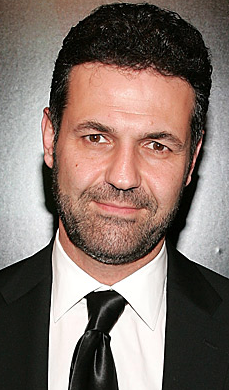

Acerca de
Khaled Hosseini
Biografía
Nació el 4 de marzo 1965 en Kabul (Afganistan).
Nació el 4 de marzo 1965 en Kabul (Afganistán). Es hijo de una profesora y un diplomático. A los cinco años de edad Khaled se trasladó con su familia a vivir Irán, por el trabajo de su padre. En 1973 los Hosseini retornaron a Afganistán, antes de establecerse durante un tiempo en Francia.
Al caer su país en manos del PDPA y sufrir la invasión soviética, emigrarían a California, Estados Unidos. Hosseini estudió biología en la Universidad de Santa Clara, y más tarde medicina en la de San Diego. Influenciado por sus experiencias infantiles, debutó internacionalmente como novelista de narrativa contemporánea con “Cometas en el cielo” y “Mil soles espléndidos”.